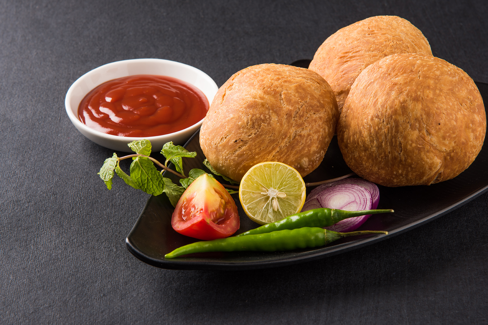

Kachori

Kachori is a very popular snack that is enjoyed throughout India.
The crispy little hand-pie-like circles have an amazing amount of
flavor packed in, and are just the right size for eating on the go.
It’s no wonder why these are so loved!
Ingredients
Filling
- Yellow Moong Dal
- Fennel Seeds
- Coriander Seeds
- Red Pepper Flakes
- Ginger Powder
- Mango Powder
- Hing
- Salt
- Oil
- Water
Wrapper
- Urad Flour
- Oil
- Water
- Salt
Steps to prepare
- Mix the flour, salt, and oil.
- Add the chilled water slowly, mixing with your fingers as you pour.
- Do not knead the dough. It should be very soft.
- Cover the dough and let it sit at least fifteen minutes
- Take the dough and knead it for minutes. Divide the dough into twelve equal parts.
- Take one part of the dough and with your fingers flatten the edges to form a three-inch circle, leaving the center a little thicker than the edges.
- Mold the dough into a cup and place one teaspoon of the filling in the center.
- Pull the edges of the dough to wrap the dal filling.
- Proceed to make all twelve balls.
- Let the filled balls sit for three to four minutes before rolling.
- Set the filled balls on a surface with the seams facing up.
- Using the base of your palm, slowly flatten them into circles about three inches in diameter.
- Heat the oil in a frying pan over medium heat frying pan should have about one inch of oil. To check if oil is ready put a little piece of dough in the oil. It should sizzle, and come up very slow.
- Fry them on medium-low heat. After they start to puff, slowly turn them over. Fry until golden-brown on both sides.
- If the kachoris are fried on high heat, they will get soft and will not be crispy.
- Kachoris can be stored for at least a week in an airtight container.